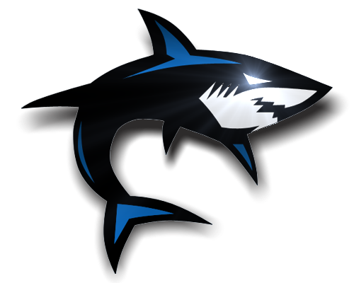

<v-app class="client white">
  <v-toolbar app color="white">
    <v-avatar>
      
    </v-avatar>
    <v-toolbar-items>
      <v-btn :to="{name: 'client-accountant'}" exact active-class="" flat>Accountant</v-btn>
    </v-toolbar-items>

    <v-spacer></v-spacer>

    <!-- <v-toolbar-items v-if="!isAuth">
      <v-btn :to="{name: 'auth-login'}" exact active-class="" flat>Sign In</v-btn>
      <v-btn :to="{name: 'auth-register'}" exact active-class="" flat>Sign Up</v-btn>
    </v-toolbar-items> -->
  </v-toolbar>

  <v-content class="blue-grey lighten-4">
    <v-fade-transition mode="out-in">
      <v-container fluid grid-list-md>
        <router-view></router-view>
      </v-container>
    </v-fade-transition>
  </v-content>

  <v-footer class="pa-3">
    <nav>
      <a href="mailto:hungbang@outlook.com?cc=dangchison@gmail.com">About Us</a>
      <a href="mailto:hungbang@outlook.com?cc=dangchison@gmail.com">FeedBack</a>
    </nav>
    <v-spacer></v-spacer>
    <div>&copy; {{ new Date().getFullYear() }}</div>
  </v-footer>
</v-app>
